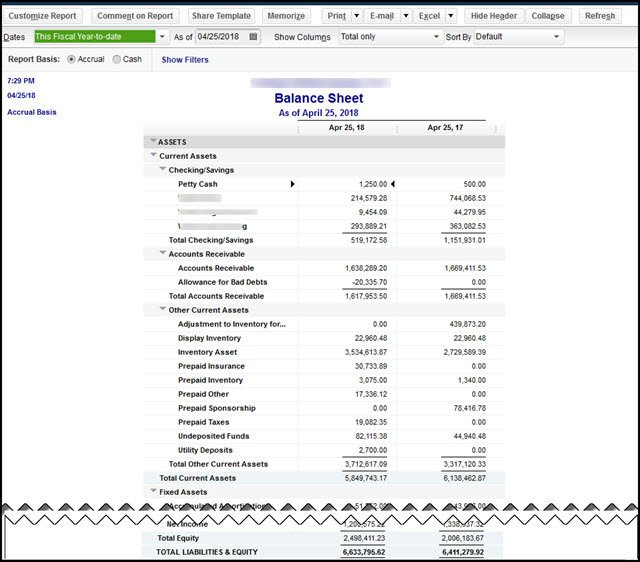

INTUIT QUICKBOOKS EXPERT | EMPOWERING BUSINESS WITH FINANCIAL CLARITY.
As a Subject-Matter Expert (SME), I fill a particular niche that falls in the middle management category; by supervising smaller teams and becoming an interchangeable role, I manage both lower tasks and upper tasks that are too difficult for tenured team members but too easy for Elite team members. The top skills I would highlight regarding my experience in a middle-management position would be:
Written and Verbal Communicator: Clear communication is crucial. I always provide clear instructions to my team members, whether through written emails or verbal discussions. Active listening skills are equally important whenever I communicate face-to-face.
Decision-Making: Supervisors regularly make important decisions for their teams. Develop a thoughtful decision-making process that considers the well-being of both your team and the company. Use critical thinking skills to weigh options and predict outcomes.
Interpersonal Skills: Building strong relationships with your team members is essential. Listen to their needs, understand their perspectives, and create a positive work environment. Be approachable and empathetic.
Adaptability: The software industry evolves rapidly. Stay adaptable by learning new technologies, adjusting to changing project requirements, and being open to feedback from your team.
Time Management: Juggling multiple tasks is common for supervisors. Prioritize effectively, allocate time for team meetings, individual coaching, and project management. Avoid burnout by managing your time wisely.
Conflict Resolution: Conflicts arise in any team. Develop conflict resolution skills to address disagreements professionally. Encourage open communication and find win-win solutions.
Cooperation: Collaborate with other teams, stakeholders, and departments. Foster a sense of teamwork and cooperation to achieve common goals.
Mentorship: Be a mentor to junior team membersGuide their professional growth, provide constructive feedback, and help them develop their skills.
Positivity: Maintain a positive attitude even during challenging times. Your optimism can inspire your team and create a supportive work environment.
Willingness to Learn: The software field is dynamic. Stay curious and continuously learn—whether it’s about new programming languages, project management methodologies, or leadership techniques.

Financial Accuracy Champion: During my time in the QuickBooks Online and QuickBooks Online Payroll division, I consistently ranked among the top bookkeepers, especially when it came to crafting meticulous balance sheets. My keen eye for detail ensures accuracy and a clear picture of your financial health. If your balance sheet is out of whack, I can pinpoint and rectify discrepancies, ensuring a reliable foundation for your financial records.
Problem-Solving Pro: Beyond balance sheets, I excel at untangling various bookkeeping challenges. Whether it's journalizing transactions or reconciling accounts, I possess the skills and knowledge to navigate these tasks efficiently. I approach problems with a methodical yet creative mindset, ensuring a smooth resolution and peace of mind for you.
Streamlined Financial Management: My expertise allows me to go beyond simple data entry. I can identify and address inconsistencies, improve record-keeping processes, and ultimately streamline your financial management. By ensuring the accuracy and clarity of your financial data, I empower you to make informed decisions and achieve your financial goals.